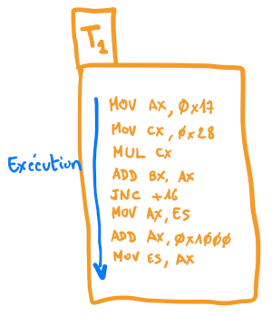
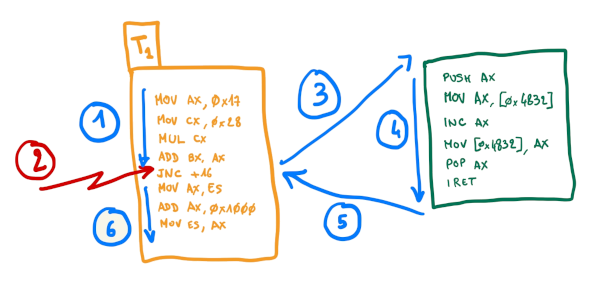
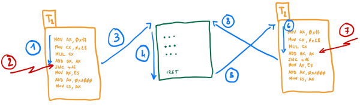
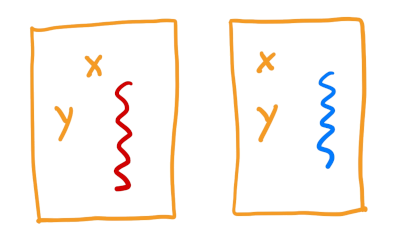
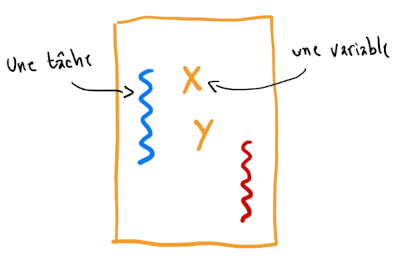
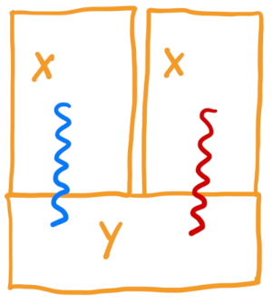
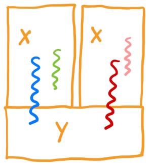

Les outils de synchronisation
Introduction
Remarque préliminaire
Avant toute chose, je précise que cette section n’est pas un cours, elle ne se veut pas complète, elle est juste là pour vous rafraîchir les idées. Pour le dire plus simplement : allez donc voir votre cours de systèmes d’exploitation !
Remarque liminaire
Je vais supposer pour le moment que nous utilisons un système informatique doté d’un processseur unique, de mémoire, de dispositifs d’entrée-sortie. A tout instant le microprocesseur peut exécuter une unique instruction et recevoir une interruption.
Il me semble en effet important de bien connaître et comprendre cette configuration simple avant de passer à des choses plus lourdes !
Je vais donc commencer par amener le problème simplement, en me fondant sur une technique élémentaire permettant d’introduire du “pseudo parallélisme” grâce à du temps partagé fondé sur quelques outils basiques.
Quel est le problème ?
Le traitement d’une interruption
Imaginons un programme en cours d’exécution. Nous pouvons le voir comme une séquence d’instructions en assembleur exécutées par le processeur. Ce dernier utilise pour cela des variables qui sont dans des registres et de la mémoire ; une telle exécution est appelée une tâche, et nous appellerons celle-ci T1.
La figure suivante illustre cette exécution, représentée par la flèche bleue.

Comme vous le savez, la tâche T1 peut être interrompue, ce qui va
conduire à l’exécution d’une autre séquence d’instructions, typiquement
le code la fonction de traitement (le handler) de l’interruption en
question. À la fin de cette fonction de traitement, l’exécution de la
séquence initiale reprendra son cours exactement là où il en était. Cela
se fera probablement parce que la dernière instruction de la fonction de
traitement est iret ou un équivalent.
La figure suivante illustre ce principe.

Mais comment est-ce possible ? Pour exécuter correctement le programme, le microprocesseur utilise des registres et de la mémoire, nous l’avons dit, mais la fonction de traitement de l’interruption va faire exactement la même chose ! Comment peut-on alors être sûr que le retour au programme initial se fera vraiment dans les mêmes conditions, y compris avec les valeurs inchangées dans les registres et dans la mémoire ?
Avant de discuter des éléments de réponse, nous allons élargir davantage le problème.
Introduction du temps partagé
En effet, puisqu’il est possible d’interrompre la tâche T1 pendant quelques temps et d’y revenir ensuite, pourquoi ne oas profiter de ce temps pour faire autre chose ? C’est exactement cette idée qui va nous permettre de mettre en place du pseudo parallélisme : plutôt que reprendre le cours de T1, nous pouvons reprendre le cours d’une autre tâche, appelons la T2. Plus tard, l’exécution de T2 sera probablement interrompue à son tour, et il sera alors possible de reprendre le cours de T1 (ou d’une autre tâche T3 !).
La figure suivante illustre un tel mécanisme. Les raisons pour lesquelles un tel fonctionnement peut êtr intéressant seront décrites ailleurs. Les outils et techniques permettant de le réaliser sont présentées dans le chapitre lié à l’ordonnancement.

On comprend alors que la gestion de l’état des registres et de la mémoire prend une autre dimension.
Premières pistes : un peu de civisme
Une première réponse consiste à sauvegarder les registres dans la pile
(par des instructions push) au début de la fonction de traitement de
l’interruption et à les restaurer à la fin de cette fonction (grâce à
des instructions pop). Cela permet donc de rêgler la question des
registres sans altérer la pile qui est alors elle aussi rendue dans le
même état qu’avant l’interruption, …
Qu’en est-il des variables situées en mémoire ? La pile a une gestion un peu spécifique, qui permet d’empiler des données durant le traitement de l’interruption comme nous venons de l’évoquer. Les données placées dans la pile peuve être manipulées sans conséquence pour le programme qui a été interrompu, pour peu qu’elles soient empilées puis dépilées par la fonction de traitement. La pile pourra donc être utilisée pour stoquer des données temporaires durant le traitement de l’interrruption.
Cette première idée constitue une rêgle de “bonne conduite” que l’on devra scrupuleusement respecter pour que le système puisse fonctionner : les fonctions de traitement des interruptions devront sauvegarder dans la pile les registres qu’elles sont susceptibles de modifier (y compris les “flags” bien sûr) et les restaurer avant de rendre la main.
Gestion du multi tâches : un peu d’organisation
La bonne conduite des fonctions de traitement des interruptions est donc une nécessité pour un bon fonctionnement d’un système monotâche, mais elle ne saurait suffir sur un système multitâche. Il faut en effet maintenant être capable, avant de reprendre l’exécution de la tâche T2, par exemple, de restaurer l’état des registres tel qu’ils étaient lorsque cette tâche avait été interrompue, et non tels qu’ils étaient lorsque la dernière tâche en cours (la tâche T1 par exemple a été interrompue).
Le noyau va donc devoir mettre en place des techniques (potentiellement avec l’aide su matériel) lui permettant de restaurer les registres dans l’état convenable avant de reprendre l’exécution d’une tâche. Dans la figure précédente, c’est donc avant l’étape 5 que le système doit d’assurer que les registres sont bien dans l’état dans lequel les avait laissés la tâche T2, et non la tâche T1.
Et la mémoire dans tout ça ?
Nous ne nous sommes intéressés jusque là qu’aux variables qui étaient contenues dans des registres, mais nos programmes utilisent aussi la mémoire pour stocker les variables. Comment la cohérence est-elle assurée pour elle ?
Une première solution : chacun chez soi !
La première idée, bien sûr, est de s’assurer que chaque tâche ait accès à une zone mémoire qui lui soit réservée. Si elle et elle seule peut y accéder, aucun risque d’incohérence, et tout va bien, ...
Comment assurer qu’un tel principe fonctionne correctement ? Il y a évidemment deux possibilités : on fait confiance aux tâches (à leurs auteurs et leurs utilisateurs), ou on met en place des mécanismes de protection.
La première solution peut être acceptable dans des environnements maîtrisés : si vous êtes l’auteur de l’intégralité du système, vous savez que vous avez programmé vos applications en respectant les rêgles.
Dans un cadre plus général, il faudra passer par la seconde solution. C’est alors le noyau qui va devoir attribuer la mémoire aux différentes tâches et les empêcher, avec l’aide du matériel, d’aller lire ou écrire ailleurs. Je vous parle de cela dans le chapitre dédié à la gestion de la mémoire, …
Le retour du civisme
L’autre solution permettant d’assurer la cohérence du contenu de la mémoire est à nouveau, comme pour les registres, de définir “quelques rêgles simples” et de s’y tenir. L’ensemble des outils de synchronisation dont vous avez entendu parlé dans vos cours, et notemment ceux dont je vais parler ici, permettent de mettre en place ces rêgles simples.
Il est en revanche cette fois ci plus délicat pour le système de mettre en place des outils coercitifs obligeant les tâches à respecter ces rêgles. Cependant, comme nous allons le voir, ce n’est généralement pas nécessaire, car on va se placer dans des situations dans les lesquelles on sait pouvoir faire confiance aux différentes tâches.
Quel modèle choisir ?
Vous l’avez compris, malin que vous êtes, les deux techniques que je viens d’évoquer correspondent à deux modèles de gestion de la mémoire
-
la mémoire peut être partagée entre les différentes tâches qui s’exécutent sur le système ;
-
la mémoire peut être réservée à chaque tâche.
La mémoire réservée est une façon un peu extrème de répondre aux problèmes de cohérence puisqu’ils disparaissent complètement, mais elle ne permet pas aux différentes tâches de communiquer (il faudra donc trouver d’autres solutions pour cela).
C’est une technique assez largement utilisée dans les systèmes généraux multitâches. Elle est illustrée par la figure suivante.

La technique de la mémoire partagée est plus simple à mettre en oeuvre, et permet aux tâches de communiquer entre elles, mais elle va nécessiter la mise en place d’outils de synchronisation pour assurer la cohérence, et elle ne permet pas de protéger une tâches contre les actions malveillantes ou accidentelles des autres tâches. Elle est illustrée par la figure suivante.

Pour marier les avantages des deux techniques, un système de type Unix les implante toutes les deux comme illustré par la figure suivante.

L’idée est qu’une tâche (oui, je sais, le terme utilisé ici est processus) va disposer d’une partie de la mémoire pour faire ce qu’elle veut, et que lorsqu’elle va avoir besoin des services du noyau, elle s’exécuter en mode protégé et pouvoir accéder ainsi, via le code du noyau, à une zone mémoire commune. C’est donc dans le code du noyau que seront utilisés les outils de synchronisation assurant la cohérence.
Pour résumer, sur un système classique de type Unix utilisant des “processus lourds”, seul le code du noyau doit s’inquiéter des problèmes de synchronisation. Sur un système sans outils matériel de protection de la mémoire, c’est plus compliqué, ...
Notons tout de même qu’un système de type Unix peut également implanter des “processus légers” ou threads (par exemple conformément à la norme POSIX dont j’ai oublié le numéro). On se retrouve alors avec une situation comme celle de la figure suivante.

Dans ce cas, le code d’une application qui utilise cette fonctionnalité doit lui aussi être instrumenté par des outils de synchronisation de sorte à assurer la cohérence des données.
Résumé des situation problématiques sur un système monoprocesseur
Si nous envisageons un système de type Unix sur une machine monoprocesseur, qui implante des processus lourds avec une isolation de la mémoire assurée par une MMU, quelles sont finalement les situations à prendre en compte ? Il y en a essentiellement deux :
Un traitement en court peut être préempté par une interruption. Cette situation peut être exceptionnellement évitée au besoin (en interdisant brièvement certaines interruptions). Ses conséquences peuvent également être maîtrisées par le fait que le traitement d’une interruption sera aussi limité que possible. Des outils de sycnhronisation restent cependant nécessaires, avec une contrainte spécifique : il est inenvisageable de mettre en attente le code de traitement d’une interruptions !
Une tâche en train d’effectuer une action dans le noyau (en particulier par le biais d’un appel système) peut être interrompue pour passer la main à une autre tâche qui va à son tour effectuer un traitement dans le noyau. Une première approche, relativement simple, consiste à interdire la présence de plus d’une tâche dans le noyau à tout instant (on parle de verouillage globale du noyau, ou “big kernel lock”). Une solution plus subtile (et bien plus efficace sur un système multiprocesseur) sera de protéger chaque variable (ou sous-système) sensible du noyau par des outils de synchroniation.
L’implantation dans ManuX
ManuX implante et utilise un modèle de mémoire allouée en mode utlisateur et partagée dans le noyau. En l’absence de gestion de la mémoire fondée sur la MMU, l’usage exclusif de la mémoire allouée en mode utilisateur est fondé sur le civisme du code applicatif.
Dans le noyau, c’est une autre histoire ; les données peuvent être manipulées par plusieurs tâches, et des outils de synchronisation doivent donc être mis en place.
Les moyens de synchronisation entre tâches actuellement disponibles sont
-
les opérations atomiques ;
-
les exclusions mutuelles ;
-
les conditions.
Avant de rentrer dans le détail de ces outils, revenons brièvement sur les spécificités des différentes situations.
Les situations à gérer
Rappelons-nous que pour le moment ManuX fonctionne sur un système mono-processeur. Cela signifie que les seules situations problématiques (c’est-à-dire nécessitant la mise en place de mécanismes de synchronisation) sont les suivantes
-
le code de la tâche en cours et le code de traitement de l’interruption manipulent des ressources communes ;
-
la tâche en cours au moment de l’interruption et la nouvelle tâche vers laquelle l’ordonnanceur décide de basculer manipulent des ressources communes.
Ces situations justifient l’utlisation de différents outils.
Synchronisation entre une tâche et une interruption
Un premier élément important vient des différences fondamentales entre une tâche et le traitement d’une interruption.
L’exécution d’une tâche peut durer longtemps, elle peut être mise en pause puis réveillée plus tard, elle est pour cela caractérisée par un contexte d’exécution (état des registres, de la pile, …) qui doit être sauvegardé lorsqu’elle est mise en pause et restauré lorsqu’elle est réveillée. L’exécution d’une tâche ne bloque rien : elle n’empèche pas le traitement d’une interruption, ni le basculement vers une autre tâche.
D’un autre côté, le code de traitement d’une interruption est là pour gérer une situation particulière, signalée par l’interruption (par exemple l’arrivée d’une trame sur une interface réseau). Il n’est lié à aucun contexte particulier qui pourrait être sauvegardé et repris. Ce code doit s’exécuter rapidement, il doit souvent dialoguer avec le matériel pour lui préciser que l’événement est pris en charge. L’exécution de ce code est généralement bloquant pour le système : il est impossible de basculer vers une tâche, et souvent impossible même de traiter une autre interruption. Il est évidemment impossible de mettre en pause l’exécution de ce code.
Les outils de synchronisation utilisables dans une situation impliquant une interruption doivent donc être conçus en ce sens.
Masquage des interruptions
Une première solution est la possibilité d’interdire les interruptions (toutes ou certaines) lorsqu’une tâche manipule une ressource que le traitement d’une interruption pourrait manipuler de façon incohérente.
Les verrous tournants
Les “verrous tournants” (spinlocks en anglais) sont un outil simple permettant d’assurer une exclusion mutuelle par le biais d’une éventuelle attente active.
Synchronisation entre deux tâches
Réentrance du noyau
Opérations atomiques
Les opérations élémentaires de synchronisation sont définies dans le
fichier atomique.h. Elles se basent sur le type Atomique et les
opérations qui lui sont associées. A part l’initialisation et la
consultation, l’opération importante est la suivante
{}
booleen atomiqueTestInit(volatile Atomique * atom, uint32 val, uint32 cond);
Elle compare la valeur de l’Atomique avec cond et, en cas d’égalité,
affecte l’Atomique avec la valeur val et renvoie TRUE, sinon elle
ne fait rien et renvoie FALSE. Ce qui est important, bien sur, c’est
que la comparaison et l’éventuelle affectation soient réalisées de façon
atomique.
Exclusions mutuelles
Les variables d’exclusion mutuelle permettent d’assurer que l’accés à une ressource (typiquement une section de code critique) se fait de façon exclusive entre les tâches.
Le fichier atomique.h définit le type et les fonctions suivants
{}
typedef struct _ExclusionMutuelle {
Atomique verrou;
ListeTache tachesEnAttente;
} ExclusionMutuelle;
void initialiserExclusionMutuelle(ExclusionMutuelle * em);
void entrerExclusionMutuelle(ExclusionMutuelle * em);
void sortirExclusionMutuelle(ExclusionMutuelle * em);
Naturellement, comme leurs noms l’indiquent, les trois sous-programmes permettent respectivement d’initialiser une variable d’exclusion mutuelle, de prendre une exclusion mutuelle et de libérer une exclusion mutuelle.
Les conditions
Une condition est un outil permettant d’attendre et de signaler
l’occurence d’un événement. Dans ManuX, elles sont définies et
implantées dans les fichiers
include/manux/atomique.h
(dox) et
noyau/atomique.c
(dox) .
Les fonctions permettant de les manipuler sont les suivantes
void conditionInitialiser(Condition * cond);
void conditionAttendre(Condition * cond, ExclusionMutuelle * em);
void conditionSignaler(Condition * cond);
void conditionDiffuser(Condition * cond);
Affichage des conditions
Si la MANUX_ATOMIQUE_AUDIT est définie